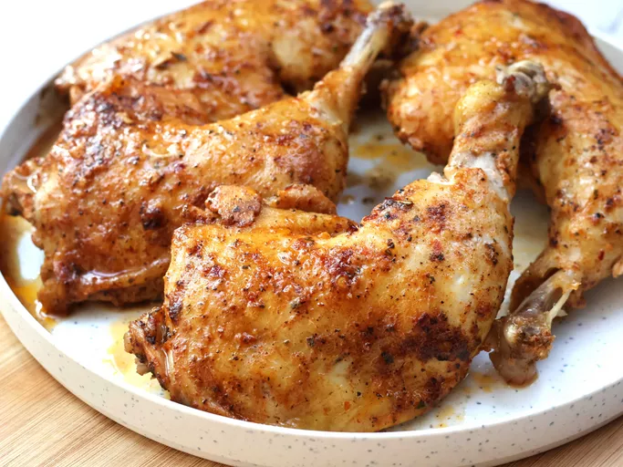

Portuguese Chicken

Description
This Portuguese chicken recipe can be baked or grilled. You may double or triple the recipe (or more if required) for bigger batches of chicken. This is an easy recipe to make several servings for a party.
Ingredients
- 1/4 cup lemon juice
- 1/4 cup olive oil
- 4 cloves garlic, peeled
- 1 tablespoon paprike
- 1 teaspoon dried oregano
- 1 teaspoon sea salt
- 1 teaspoon chili powder, or to taste
- 1 teaspoon red pepper flakes, or to taste
- 1/2 teaspoon ground black pepper
- 1 bay leaf
- 4 chicken leg quarters
Steps
- Combine lemon juice, olive oil, garlic, paprika, oregano, 1 teaspoon sea salt, chili powder, red pepper flakes, bay leaf, and black pepper in a blender or food processor. Blend until sauce is very smooth.
- Use a knife to score chicken legs a few times and place in a resealable plastic bag (or a large bowl). Pour about 1/3 cup sauce over chicken legs; stir to coat well. Season with additional sea salt. Seal the bag (or cover the bowl) and marinate in the refrigerator, 8 hours to overnight. Reserve remaining sauce for basting.
- Preheat the oven to 350 degrees F (175 degrees C).
- Place marinated chicken in a baking dish; discard any excess marinade. Cover the dish with aluminum foil.
- Bake in the preheated oven for 20 to 25 minutes. Turn chicken over and baste with reserved sauce. Re-cover with foil and bake for 20 to 25 minutes. Remove foil and continue baking until chicken is no longer pink in the center and the juices run clear, 15 to 20 minutes more. An instant-read thermometer inserted near a bone should read 165 degrees F (74 degrees C).